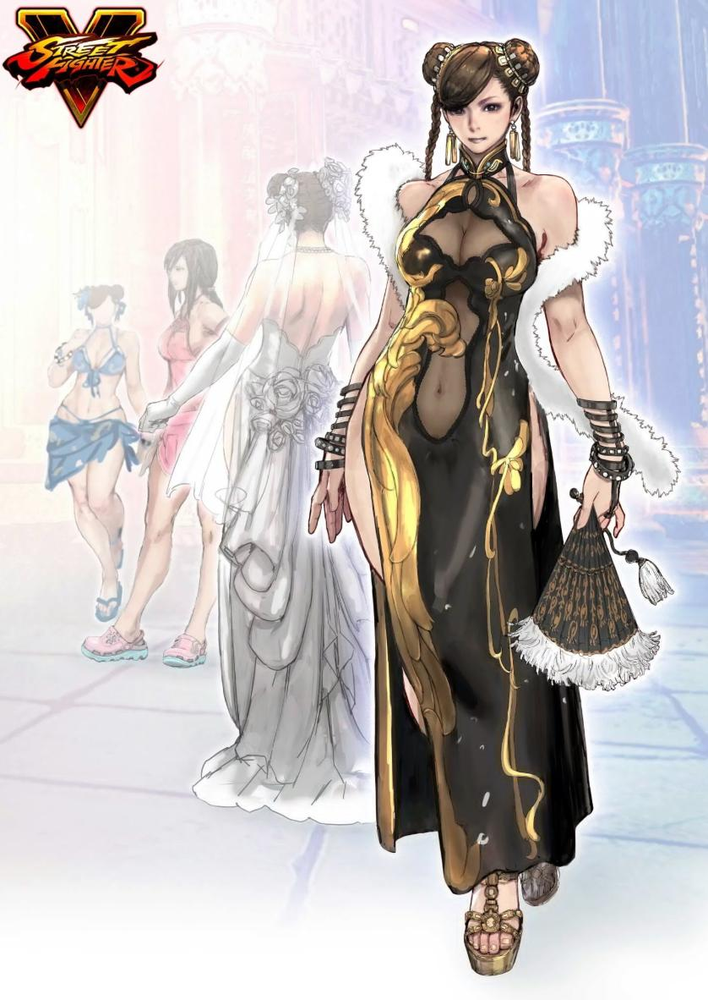

春丽高清重制后惨不忍睹？当年西村绢的绝笔
三十年前，街机厅里要是谁手里有一张《街霸》海报，整个班的男生能围着看三天。那时候我们兜里没几个钢镚儿，只能眼巴巴看别人打，如今AI技术把老插画师的作品搞成高清重制，反倒让人不敢点开看了。这到底是技术赢了，还是当年的经典太超前？

游戏场景本身就是叙事，环境里全是时代的痕迹。当年CAPCOM有西村绢，SNK有森气楼，他们画的每一张都够格挂墙上。就算再过三十年、四十年、五十年，那些画照样能打。
我还记得第一次看到春丽人设插画的感觉——真叫一个惊为天人。《少年街霸》里她紧身裤裹着线条，表情硬邦邦的，又带着点稚气，毕竟设定里她才十多岁。可当年街机屏幕糊得不行，我们压根没真正看清过大师的笔触。现在人到中年，各种画风见得多了，回头再看，才咂摸出味道来。

可等真把这些老插画放到高清镜头下，味道就变了。玩家用AI软件把那些老图真人化，怀旧画风确实变清晰了，但清晰到每条线条都看得一清二楚的时候，反而让人后背发凉——有些细节当年藏在像素点和模糊滤镜后面，刚刚好；现在被技术扒得一丝不挂，直接撞上当下的审核红线。说白了，西村绢当年画得有多大胆，今天就有多难堪。这些高清重制图在玩家群里传得满天飞，但正经平台一个比一个怂，根本不敢挂出来。
不过话说回来，《街头霸王3.3》那会儿CAPCOM已经把春丽塑造成一代宗师，在唐人街教徒弟，那既是系列的收尾，也是2D格斗的巅峰。十年后《街霸IV》重启，为了迎合欧美市场搞了粗腿人设，亚洲玩家一开始骂得厉害，结果反倒火遍全球。到了《街霸6》，春丽都成了李芬的干妈，剧情绕着圈子走，可老玩家的记忆还是钉在九十年代街机厅那会儿。
网上各种网友的段子确实有意思，但没影的事咱也该打住了。街机早成了历史，西村绢笔下的线条还烫得很。高清化让我们看清了旧时光，也顺带把某些美好变成了“不能播”。
AI重制后这些被“雪藏”的经典名画，你怎么看？是留着原汁原味的粗糙感，还是追求极致的真实还原？评论区聊聊。
关于我们
📱 公众号名称：三天笔记
✍️ 作者：曾三天
扫码关注公众号，获取每日最新资讯

商务合作与版权
商务合作 / 内容投稿 / 品牌推广
请关注公众号「三天笔记」后台留言联系
版权声明：本文由作者整理，转载需注明出处。